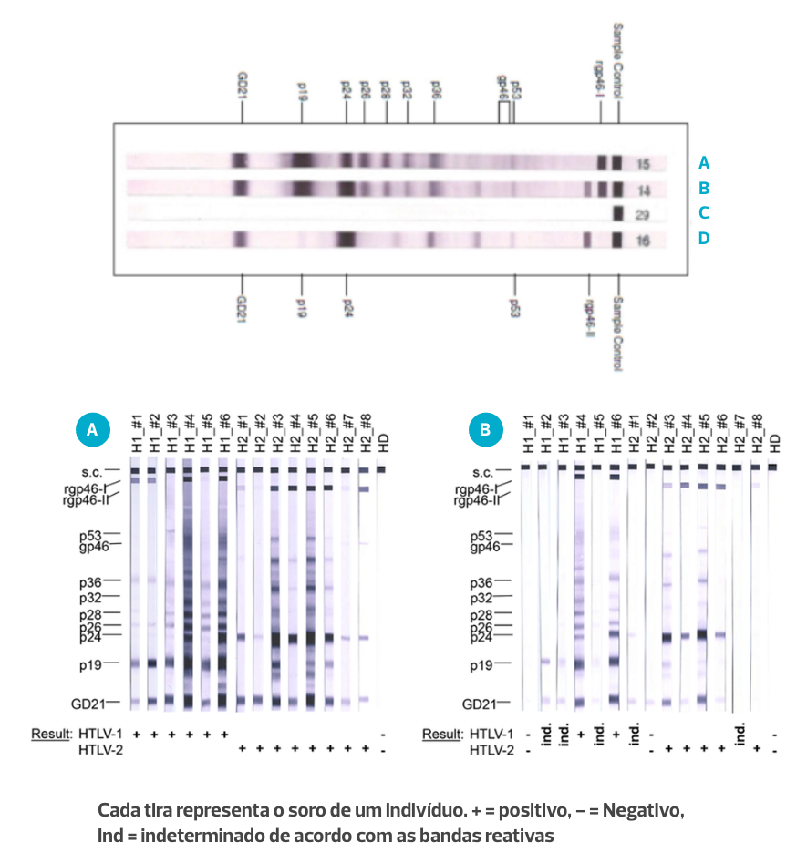
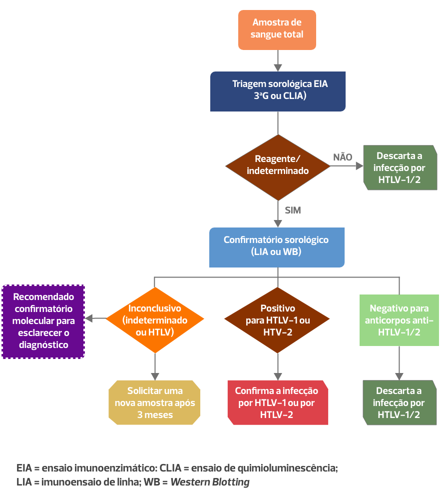
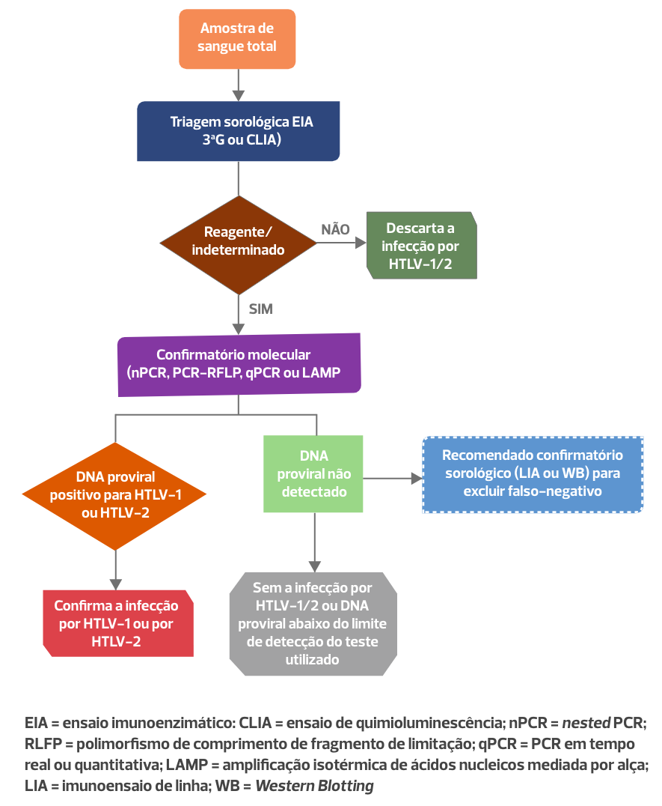

Módulo 1 | Aula 3
Diagnóstico Laboratorial da Infecção pelo HTLV
Objetivos de aprendizagem
- Compreender os princípios básicos de métodos e fluxos para o diagnóstico laboratorial recomendados pelo Ministério da Saúde do Brasil.
Testes sorológicos
A infecção pelo HTLV é uma questão de saúde pública global, com implicações significativas para os sistemas de saúde. Para realizar o diagnóstico dessa infecção é importante conhecer algumas peculiaridades do vírus, como sua estrutura, os subtipos circulantes (HTLV-1 e HTLV-2) e principalmente como se dá resposta imune do hospedeiro frente a essa virose.
A resposta imune ao HTLV é um processo complexo que envolve a ativação do sistema imunológico para combater a infecção. Quando o HTLV entra no corpo, ele infecta principalmente linfócitos T CD4+, células cruciais para a resposta imunológica. Em resposta à infecção, o sistema imunológico começa a produzir anticorpos específicos contra os antígenos do HTLV. Estes anticorpos podem ser detectados através de testes sorológicos que são fundamentais para o diagnóstico da infecção. Além dos anticorpos, a resposta imune celular, mediada por linfócitos T citotóxicos, também desempenha um papel significativo na contenção da propagação do vírus.
Testes sorológicos são exames laboratoriais usados para detectar a presença de anticorpos no sangue de uma pessoa. Esses testes são frequentemente utilizados para determinar se alguém foi exposto a um patógeno específico, como um vírus ou bactéria, e se desenvolveu uma resposta imune contra ele.
Existem diferentes tipos de testes sorológicos, cada um com seu propósito e método específicos:
IgG: Os anticorpos IgG aparecem mais tarde durante a infecção e geralmente indicam uma infecção passada ou imunidade a longo prazo.
IgA: Menos comum em testes sorológicos de rotina, mas pode ser relevante em certos contextos, como infecções mucosas.
O tempo entre a infecção pelo HTLV e a detecção de anticorpos específicos no sangue é conhecido como janela imunológica. Durante essa fase, o sistema imunológico ainda está desenvolvendo uma resposta e os testes sorológicos podem não ser capazes de identificar os anticorpos produzidos. Para o HTLV, a janela imunológica pode variar, mas geralmente os anticorpos começam a ser detectáveis entre 4 e 8 semanas após a infecção. No entanto, em alguns casos, pode levar até seis meses para que os níveis de anticorpos sejam suficientemente altos para serem detectados por métodos sorológicos utilizados para triagem como o Enzyme-Linked Immunosorbent Assay ou em português Ensaio de Imunoabsorção Enzimática (ELISA) e Chemiluminescent Immunoassay ou em português Quimioluminescência (CLIA).
Após a soroconversão, os testes sorológicos como ELISA, CLIA, Western Blot (WB) e o Ensaio de Linha (LIA) são amplamente utilizados para o diagnóstico e confirmação da infecção pelo HTLV.
O ELISA e o CLIA são os primeiros a serem realizados devido à sua alta sensibilidade e facilidade de execução. O WB e o Ensaio de Linha são utilizados como testes confirmatórios para validar os resultados positivos iniciais e identificar os tipos virais, por exemplo, se o indivíduo está infectado pelo HTLV-1 ou HTLV-2. O WB detecta anticorpos específicos contra várias proteínas virais, proporcionando uma confirmação detalhada da infecção. O Ensaio de Linha, similar ao WB, utiliza tiras com antígenos virais imobilizados para uma detecção precisa dos anticorpos específicos.
Os testes moleculares, como a reação em cadeia da polimerase (PCR), são ferramentas valiosas para o diagnóstico precoce do HTLV. Estes testes detectam diretamente o DNA do HTLV nas células infectadas (DNA proviral), permitindo a identificação da infecção durante a janela imunológica. A PCR é altamente sensível e pode detectar pequenas quantidades de DNA proviral, proporcionando um diagnóstico precoce e preciso. No entanto, devido ao custo e à necessidade de infraestrutura laboratorial avançada, a PCR é geralmente utilizada em casos específicos ou como um complemento aos testes sorológicos.
Vale ressaltar que o diagnóstico precoce permite intervenções que podem retardar ou prevenir complicações graves, melhorar a qualidade de vida dos infectados e reduzir a transmissão. Assim, a compreensão do diagnóstico se faz essencial para os profissionais de saúde, gestores e a sociedade civil.
Princípios Básicos do Diagnóstico Laboratorial
Para compreender os princípios básicos de qualquer método de diagnóstico laboratorial, precisamos nos familiarizar com alguns termos e com alguns elementos que compõem a resposta imunológica de um indivíduo frente a um agente infeccioso. O diagnóstico sorológico do HTLV envolve a detecção de anticorpos específicos contra o vírus no soro do paciente.
Para entender mais sobre testes imunológicos
Fonte: CVFMétodos de Diagnóstico Laboratorial utilizados para Infecção por HTLV
Testes de Triagem para HTLV
O ELISA é uma das técnicas mais utilizadas devido à sua alta sensibilidade e facilidade de execução. Nesse método, antígenos virais são fixados em uma placa e o soro do paciente é adicionado. Se houver anticorpos contra o HTLV no soro, eles se ligarão aos antígenos. Um anticorpo secundário conjugado a uma enzima é então adicionado, que se liga aos anticorpos do paciente. A reação enzimática subsequente gera uma mudança de cor, indicando a presença de anticorpos contra o HTLV.
Princípio da Técnica ELISA (Ensaio da Imunoabsorção Enzimática)
![A imagem é sequência de cinco ilustrações que explicam o princípio da técnica ELISA, mostrando as cinco etapas do processo. A Primeira Etapa mostra poços de uma placa de ensaio revestidos com anticorpos de captura, com uma solução representando a amostra sendo adicionada. A segunda Etapa ilustra a ligação do antígeno alvo da amostra aos anticorpos de captura no fundo dos poços. A terceira Etapa mostra um anticorpo primário se ligando ao antígeno já imobilizado no fundo do poço. A quarta Etapa exibe um anticorpo secundário marcado com biotina se ligando ao anticorpo primário. E a quinta Etapa mostra a adição de estreptavidina conjugada com HRP, que catalisa uma reação de cor no ensaio.](../assets/images/modulo1/aula3/img1.png)
Como o teste Elisa funciona?
Fonte: CVFOutra técnica comum é o CLIA, que também detecta anticorpos contra o HTLV com alta sensibilidade. Similar ao ELISA, o CLIA utiliza antígenos virais fixados e a adição do soro do paciente para a detecção de anticorpos. A principal diferença está no sistema de detecção: no CLIA, a reação entre o anticorpo secundário e o substrato resulta em emissão de luz, que é medida por um luminômetro. A intensidade da luz emitida é proporcional à quantidade de anticorpos presentes, permitindo uma detecção precisa e sensível da infecção pelo HTLV.
Testes Confirmatórios
Para confirmação de resultados positivos e identificação dos tipos virais, são empregados métodos como o Western Blot (WB), o Ensaio de Linha (LIA) e a Reação em Cadeia da Polimerase (PCR). O WB é um teste confirmatório que separa proteínas virais por eletroforese em gel e as transfere para uma membrana. O soro do paciente é então aplicado, e se houver anticorpos contra o HTLV, eles se ligam a proteínas específicas, visualizadas por uma reação colorimétrica.
Princípio da Técnica de Western Blot
![A imagem descreve o princípio da técnica de Western Blot em quatro etapas ilustradas. A primeira imagem é a Separação. Ela mostra um gel de eletroforese com amostras separadas por corrente elétrica, indicando o processo de separação das proteínas. A segunda imagem é a Transferência. Ela mostra uma pilha consistindo de papel filtro, gel e membrana, mostrando o processo de transferência das proteínas para a membrana. A terceira imagem exibe o mecanismo de coloração, onde os anticorpos primário e secundário se ligam ao antígeno alvo, com a presença de substrato e enzima para detecção. A última imagem ilustra o resultado. Ela mostra uma membrana com bandas visíveis, representando a detecção e localização das proteínas de interesse.](../assets/images/modulo1/aula3/img2.png)
Como é feita a técnica Western Blot?
Fonte: CVFO Ensaio de Linha é similar ao WB, mas utiliza tiras com antígenos virais imobilizados em linhas discretas. Quando o soro do paciente é aplicado, anticorpos específicos se ligam às linhas correspondentes, que são detectadas por reações colorimétricas ou quimioluminescentes. Esses métodos confirmatórios são essenciais para distinguir verdadeiros positivos de falsos positivos e proporcionar um diagnóstico preciso da infecção pelo HTLV.
Material sugerido
A técnica de Reação em Cadeia da Polimerase (PCR) para o diagnóstico confirmatório de HTLV baseia-se na amplificação do DNA proviral do HTLV presente nas células infectadas. A PCR é uma ferramenta altamente sensível e específica, capaz de detectar pequenas quantidades de material genético viral antes mesmo que os anticorpos sejam produzidos pelo sistema imunológico. No procedimento, amostras de sangue do paciente são processadas para extrair o DNA, que é então misturado com primers específicos para o HTLV, nucleotídeos, Taq Polimerase e outros reagentes necessários.
Princípio da Reação em cadeia da polimerase / Teste de RT-PCR
![Na primeira ilustração, uma seringa, usada para coletar uma amostra de sangue de um braço humano. A segunda ilustração mostra o tubo de sangue, com circulo do lado. Dentro do círculo tem um desenho do vírus HTLV. Uma flecha indica o próximo passo, o tubo de exame com um círculo ao lado, onde tem um desenho do DNA purificado dentro, representando o processo de extração de DNA das células brancas do sangue. A próxima ilustração tem um tubo de amostras e uma seta indicando que o tubo vai para uma placa de qPCR. Ao lado da placa tem uma seta indicando a imagem de um termociclador de qPCR, onde a placa é inserida. A imagem mostra o processo de amplificação do DNA alvo utilizando qPCR, ilustrado por figuras esquemáticas de DNA. O primeiro grupo mostra a separação das duas fitas de DNA - a denaturação. A sequência mostra a ligação de primers às fitas de DNA - o anelamento. A próxima sequência mostra a cópia das fitas de DNA originais, formando novas fitas complementares. A imagem inclui um gráfico indicando o resultado do teste.](../assets/images/modulo1/aula3/img3.png)
Através de ciclos repetidos de aquecimento e resfriamento, a enzima polimerase sintetiza novas cópias do DNA-alvo, resultando em uma quantidade amplificada de DNA viral que pode ser facilmente detectada e analisada.
A PCR é particularmente útil durante a janela imunológica, quando os anticorpos contra o HTLV ainda não são detectáveis por testes sorológicos tradicionais. Além disso, a técnica de PCR pode ser utilizada para confirmar resultados sorológicos duvidosos ou para realizar a genotipagem do vírus, fornecendo informações adicionais sobre a infecção. A precisão e a capacidade de detecção precoce tornam a PCR uma ferramenta valiosa no diagnóstico confirmatório de HTLV, especialmente em casos em que a suspeita clínica é alta, mas os resultados sorológicos são negativos ou inconclusivos. No entanto, devido ao custo e à complexidade do equipamento necessário, a PCR é geralmente reservada para casos específicos ou em laboratórios especializados.
Interpretação dos Resultados dos Testes
A interpretação segura dos resultados de exames de triagem e de confirmação para HTLV requer uma compreensão detalhada dos métodos utilizados e dos possíveis resultados que cada etapa pode apresentar, assim é essencial ter acesso à metodologia utilizada e à bula do fabricante do ensaio realizado. Fatores como sensibilidade e especificidade dos testes, bem como a ocorrência de falsos positivos e falsos negativos afetam a interpretação dos resultados.
A interpretação dos resultados dos testes depende da sensibilidade (capacidade de detectar verdadeiros positivos) e especificidade (capacidade de detectar verdadeiros negativos).
A ocorrência de falsos positivos e falsos negativos pode impactar o diagnóstico. A compreensão das causas desses resultados é essencial para a interpretação correta.
Em um primeiro momento, os testes de triagem, como ELISA ou CLIA, são projetados para serem altamente sensíveis, o que fornece segurança para descartar resultados falso-negativos, esses testes vão detectar a presença de anticorpos contra HTLV no soro do paciente. Um resultado positivo nesses testes indica que o paciente pode estar infectado com HTLV, mas devido à possibilidade de resultados falso-positivos, principalmente em populações de baixa prevalência, é crucial proceder com testes confirmatórios. Um resultado negativo geralmente sugere a ausência de infecção, mas deve-se considerar a janela imunológica de 90 dias pós exposição, período em que os anticorpos ainda não são detectáveis.
Os testes confirmatórios, como o Western Blot (WB) ou o Ensaio de Linha, oferecem maior especificidade ao detectar anticorpos contra proteínas específicas do HTLV. A interpretação desses resultados deve considerar a presença de bandas específicas que indicam a infecção pelo vírus. Um resultado confirmatório positivo, com as bandas esperadas, confirma a infecção pelo HTLV. Em contrapartida, um resultado negativo ou indeterminado no teste confirmatório pode sugerir a ausência de infecção ou a necessidade de retestar após algum tempo, especialmente se há suspeita clínica alta e o paciente está na janela imunológica.
Adicionalmente, em casos de resultados indeterminados ou discordantes, o teste de PCR pode ser empregado para detectar o DNA proviral, garantindo um diagnóstico preciso. A combinação de resultados de triagem e confirmação, junto com a avaliação clínica e epidemiológica, é essencial para assegurar a interpretação correta e segura dos exames para HTLV.
Resultados do teste Western blot para confirmação de infecção por HTLV e discriminação do tipo viral (HTLV-1 e HTLV-2) em amostras reativas

VOCÊ SABIA?…
Atualmente existem testes rápidos para HTLV em desenvolvimento no Brasil. Os testes rápidos são de grande importância porque para realizá-los não é necessária uma grande estrutura laboratorial, e isso permite que mais pessoas sejam triadas e diagnosticadas. Inclusive, é fundamental para pessoas que vivem em locais remotos ou de difícil acesso.
Quiz Interativo
1. Se a triagem CLIA for positiva, o Western Blotting for indeterminado, e a PCR for positiva para HTLV-2, qual é a interpretação final do diagnóstico?
2. Se a triagem CLIA for positiva, o Western Blotting mostrar bandas para p19 e/ou p24, GD 21 e rgp46-I, e a PCR for positiva para HTLV-1, qual é a interpretação final do diagnóstico?
3. Se a triagem CLIA for positiva e o Western Blotting mostrar nenhuma reatividade, qual seria a interpretação final do diagnóstico sorológico para HTLV?
Fluxogramas para o Diagnóstico
O fluxograma para o diagnóstico do HTLV envolve uma série de etapas sequenciais para detectar e confirmar a presença do vírus no organismo.
![Inicialmente, utiliza-se um teste de triagem sorológica, como o ELISA ou o CLIA, devido à sua alta sensibilidade e capacidade de processar um grande número de amostras de forma eficiente. Positivo: Se o resultado do teste de triagem for positivo, um teste confirmatório é necessário para garantir a precisão do diagnóstico. Testes como o Western Blot (WB) e o Ensaio de Linha são comumente utilizados nessa etapa, pois oferecem maior especificidade ao detectar anticorpos contra proteínas particulares do HTLV. Negativo: Em casos de resultados discordantes, ou quando há suspeita de infecção recente, a PCR pode ser empregada para detectar diretamente o DNA proviral, confirmando a presença do vírus de forma definitiva. Assim, os fluxogramas de diagnóstico combinam diferentes testes para aumentar a acurácia do diagnóstico.](../assets/images/modulo1/aula3/img5.png)
O Guia de Manejo Clínico da Infecção pelo HTLV, publicado pelo Ministério da Saúde do Brasil em 2020, apresenta dois tipos de fluxogramas para o diagnóstico e a confirmação dessa virose que pode ser testes sorológicos ou por testes moleculares.
Fluxograma de testes laboratoriais para diagnóstico da infecção por HTLV-1 e HTLV-2 no Brasil, empregando testes confirmatórios sorológicos
Fluxograma de testes laboratoriais para diagnóstico da infecção por HTLV-1 e HTLV-2 no Brasil, empregando testes confirmatórios moleculares
O fluxograma utilizado para a população geral pode ser utilizado em gestantes, uma vez que um estudo recente mostrou que a gestação não interfere na detecção de anticorpos anti-HTLV nem na detecção de segmentos do genoma proviral.
No entanto, para crianças nascidas de mães infectadas pelo HTLV (crianças expostas) com idade inferior a 18 meses, recomenda-se a realização do teste molecular (PCR). Caso este resultado seja negativo, é aconselhável repetir o exame em mais amostras de sangue. Importante destacar que o diagnóstico definitivo em crianças expostas com idade abaixo de 18 meses, ainda não está estabelecido, pois se desconhece o período em que se pode encontrar células infectadas da mãe no sangue da criança exposta.
Para crianças com idade acima de 18 meses, recomenda-se seguir o fluxograma utilizado para a população geral. Na maioria das crianças, foi observada a perda dos anticorpos maternos em seis meses, havendo, porém, relatos de soro-negativação completa aos 12 meses. Ainda, em crianças não amamentadas, sugere-se realizar a sorologia para HTLV aos 15 meses e, nas amamentadas, três meses após a retirada do aleitamento materno. Já em crianças que se infectaram, o tempo de soroconversão para HTLV variou de seis a 24 meses.
Desafios dos fluxogramas de diagnóstico
Apesar de ser um processo bem estruturado, a operacionalização do fluxograma de diagnóstico do HTLV enfrenta desafios significativos. A implementação e manutenção dos testes laboratoriais requerem infraestrutura adequada, treinamento especializado de pessoal e controle rigoroso de qualidade, fatores que podem ser limitantes em áreas com recursos escassos. Além disso, os custos associados aos testes confirmatórios, especialmente o PCR, são elevados, o que pode restringir o acesso ao diagnóstico preciso em muitos locais. A necessidade de múltiplos testes para confirmação também aumenta o tempo de espera para um diagnóstico definitivo, o que pode atrasar o início do acompanhamento clínico e intervenções necessárias. Portanto, equilibrar a precisão diagnóstica com a viabilidade operacional e os custos é um desafio contínuo na gestão do diagnóstico do HTLV.
Considerações Clínicas e Epidemiológicas
No Brasil, a testagem para HTLV é realizada em bancos de sangue, durante o processo de doação de órgãos e tecidos, processo de fertilização in vitro, em pessoas com suspeita de leucemia/linfoma de células T do adulto (ATLL), e recentemente durante o pré-natal.
Portarias para regulamentação de diagnóstico para HTLV - Ministério da Saúde do Brasil
![A imagem apresenta informações sobre as portarias do Ministério da Saúde do Brasil relacionadas ao diagnóstico de HTLV. Para o Banco de Sangue, tem a Portaria GM/MS nº 1.376, de 19 de novembro de 1993 que se refere às normas para a coleta e manejo de sangue em relação ao HTLV. Para Transplantes, tem a Portaria GM/MS nº 2.600, de 21 de outubro de 2009, sobre as diretrizes para transplantes e a inclusão do diagnóstico de HTLV. Para Portadores de ATLL, tem a Portaria GM/MS nº 23, de 31 de dezembro de 2016, que trata dos cuidados com indivíduos portadores de leucemia T-linfocitária associada ao HTLV. Para Gestantes, tem a Portaria GM/MS nº 3.148, de 6 de fevereiro de 2020, que se concentra em diretrizes para o manejo de gestantes em relação ao HTLV.](../assets/images/modulo1/aula3/img8.png)
A elaboração e promoção de políticas de saúde pública eficazes são essenciais para a prevenção e controle da infecção pelo HTLV. Isso inclui programas de triagem, campanhas de conscientização e acesso a cuidados de saúde.
Considerando esse cenário, existem fatores de risco que estão diretamente relacionados à forma de transmissão e a grupos étnicos que apresentam maior prevalência dessa infecção viral. Alguns grupos de risco:
- pessoas com histórico de múltiplas transfusões de sangue antes de 1993
- usuários e ex-usuários de drogas injetáveis
- famílias de pessoas vivendo com HTLV
- povos indígenas
- profissionais do sexo
- pessoas vivendo com outras infecções virais
Grupo de risco: famílias de portadores de HTLV
As famílias de pessoas vivendo com HTLV representam um grupo crucial para a testagem devido ao risco de transmissão intrafamiliar. É comum que membros da mesma família compartilhem comportamentos ou condições que facilitam a transmissão do vírus, como o aleitamento materno, contato sexual e até a exposição a sangue e secreções contaminadas. Identificar a presença do HTLV em familiares próximos permite intervenções precoces e adequadas, como aconselhamento sobre práticas seguras e, no caso de mulheres infectadas, a prevenção da transmissão materno-infantil através da abstinência do aleitamento materno. A testagem familiar não apenas ajuda a prevenir novas infecções, mas também proporciona um monitoramento clínico adequado e suporte para os portadores do vírus, melhorando a qualidade de vida e a saúde pública.
Indicações para testagem diagnóstica da infecção por HTLV-1/2
- Indivíduos com manifestações clínicas compatíveis com as doenças associadas ao HTLV-1, como uveites, dermatites, bexiga neurogênico, síndrome de Sjögren, sintomas reumatológicos
- Diagnóstico diferencial de mielopatias
- Doadores de sangue, órgãos ou tecidos e leite humano
- Receptores de órgãos ou tecidos
- Familiares e parcerias sexuais de pessoas vivendo com HTVL-1/2
- Indivíduos com infecções de transmissão sanguínea e sexual
- Gestantes
- Crianças expostas ao HTLV
- Usuários de drogas injetáveis
- Casos de exposição ocupacional a sangue ou material biológico, como acidente com material perfurocortante
- Pacientes infectados por Strongyloides stercoralis
- Pacientes infectados por Mycobacterium tuberculosis
- Pacientes com leucemia ou linfoma
De modo geral, a triagem regular nesses grupos de pessoas pode prevenir a disseminação do vírus entre parceiros e clientes, além de oferecer oportunidades para educação e prevenção, protegendo não só a saúde individual, mas também ajudando a reduzir a propagação do HTLV e suas doenças associadas.
Apesar dos avanços, o diagnóstico do HTLV ainda enfrenta desafios, incluindo a necessidade de testes mais acessíveis e precisos, especialmente em áreas endêmicas, maior oferta de testes comerciais para confirmação da infecção e uma plataforma de testes rápidos, que podem auxiliar no processo de triagem dessa virose.
Diagnóstico de HTLV, seu histórico e peculiaridades
Na live Diagnóstico da Infecção de HTLV: Histórico e Desafios, a professora Adele Caterino-de-Araújo e o professor Jorge Casseb discutem o tema. Veja o vídeo:
Live Diagnóstico da Infecção de HTLV
Fonte: HTLV ChannelO diagnóstico laboratorial da infecção pelo HTLV é um componente essencial no controle dessa infecção viral. Esperamos que a partir de agora você esteja apto para lidar com os desafios apresentados pelo HTLV, identificando pessoas que vivem com HTLV, para promover um melhor manejo clínico e implementar medidas efetivas de prevenção na sua comunidade.
Você chegou ao final da aula
Nessa aula, você conheceu os princípios básicos de métodos e fluxos para o diagnóstico laboratorial recomendados pelo Ministério da Saúde do Brasil.

AUTORA: Tatiane Assone